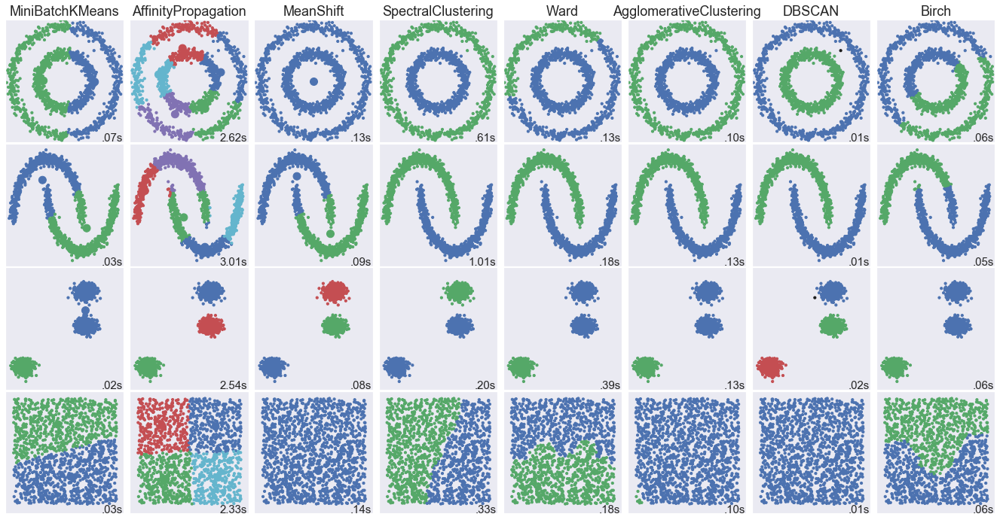
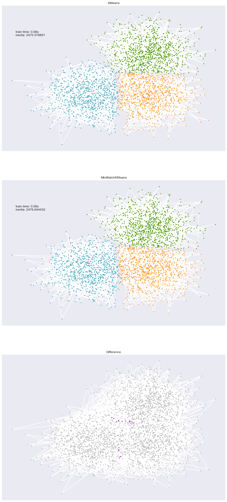
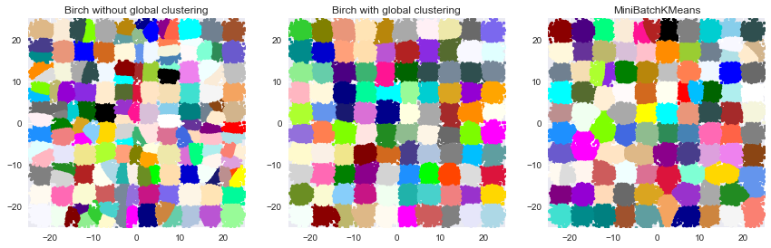

Clustering Comparison
These codes are imported from Scikit-Learn python package for learning purpose
import numpy as np import matplotlib.pyplot as plt import seaborn as sns %matplotlib inline sns.set()
1. Comparing different clustering algorithms on toy datasets
This example aims at showing characteristics of different clustering algorithms on datasets that are "interesting" but still in 2D. The last dataset is an example of a 'null' situation for clustering: the data is homogeneous, and there is no good clustering.
While these examples give some intuition about the algorithms, this intuition might not apply to very high dimensional data.
The results could be improved by tweaking the parameters for each clustering strategy, for instance setting the number of clusters for the methods that needs this parameter specified. Note that affinity propagation has a tendency to create many clusters. Thus in this example its two parameters (damping and per-point preference) were set to mitigate this behavior.
import time from sklearn import cluster, datasets from sklearn.neighbors import kneighbors_graph from sklearn.preprocessing import StandardScaler
Data
np.random.seed(0) # Generate datasets. We choose the size big enough to see the scalability # of the algorithms, but not too big to avoid too long running times n_samples = 1500 noisy_circles = datasets.make_circles(n_samples=n_samples, factor=.5, noise=.05) noisy_moons = datasets.make_moons(n_samples=n_samples, noise=.05) blobs = datasets.make_blobs(n_samples=n_samples, random_state=8) no_structure = np.random.rand(n_samples, 2), None colors = np.array([x for x in 'bgrcmykbgrcmykbgrcmykbgrcmyk']) colors = np.hstack([colors] * 20) clustering_names = [ 'MiniBatchKMeans', 'AffinityPropagation', 'MeanShift', 'SpectralClustering', 'Ward', 'AgglomerativeClustering', 'DBSCAN', 'Birch']
Cluster Comparison
plt.figure(figsize=(len(clustering_names) * 2 + 3, 9.5)) plt.subplots_adjust(left=.02, right=.98, bottom=.001, top=.96, wspace=.05, hspace=.01) plot_num = 1 datasets = [noisy_circles, noisy_moons, blobs, no_structure] for i_dataset, dataset in enumerate(datasets): X, y = dataset # normalize dataset for easier parameter selection X = StandardScaler().fit_transform(X) # estimate bandwidth for mean shift bandwidth = cluster.estimate_bandwidth(X, quantile=0.3) # connectivity matrix for structured Ward connectivity = kneighbors_graph(X, n_neighbors=10, include_self=False) # make connectivity symmetric connectivity = 0.5 * (connectivity + connectivity.T) # create clustering estimators ms = cluster.MeanShift(bandwidth=bandwidth, bin_seeding=True) two_means = cluster.MiniBatchKMeans(n_clusters=2) ward = cluster.AgglomerativeClustering(n_clusters=2, linkage='ward', connectivity=connectivity) spectral = cluster.SpectralClustering(n_clusters=2, eigen_solver='arpack', affinity="nearest_neighbors") dbscan = cluster.DBSCAN(eps=.2) affinity_propagation = cluster.AffinityPropagation(damping=.9, preference=-200) average_linkage = cluster.AgglomerativeClustering( linkage="average", affinity="cityblock", n_clusters=2, connectivity=connectivity) birch = cluster.Birch(n_clusters=2) clustering_algorithms = [ two_means, affinity_propagation, ms, spectral, ward, average_linkage, dbscan, birch] for name, algorithm in zip(clustering_names, clustering_algorithms): # predict cluster memberships t0 = time.time() algorithm.fit(X) t1 = time.time() if hasattr(algorithm, 'labels_'): y_pred = algorithm.labels_.astype(np.int) else: y_pred = algorithm.predict(X) # plot plt.subplot(4, len(clustering_algorithms), plot_num) if i_dataset == 0: plt.title(name, size=18) plt.scatter(X[:, 0], X[:, 1], color=colors[y_pred].tolist(), s=10) if hasattr(algorithm, 'cluster_centers_'): centers = algorithm.cluster_centers_ center_colors = colors[:len(centers)] plt.scatter(centers[:, 0], centers[:, 1], s=100, c=center_colors) plt.xlim(-2, 2) plt.ylim(-2, 2) plt.xticks(()) plt.yticks(()) plt.text(.99, .01, ('%.2fs' % (t1 - t0)).lstrip('0'), transform=plt.gca().transAxes, size=15, horizontalalignment='right') plot_num += 1 plt.show()

Comparison of the K-Means and MiniBatchKMeans clustering algorithms
We want to compare the performance of the MiniBatchKMeans and KMeans:
the MiniBatchKMeans is faster, but gives slightly different results (see
:ref:mini_batch_kmeans).
We will cluster a set of data, first with KMeans and then with MiniBatchKMeans, and plot the results. We will also plot the points that are labelled differently between the two algorithms.
import time from sklearn.cluster import MiniBatchKMeans, KMeans from sklearn.metrics.pairwise import pairwise_distances_argmin from sklearn.datasets.samples_generator import make_blobs
#### Data
# Generate sample data np.random.seed(0) batch_size = 45 centers = [[1, 1], [-1, -1], [1, -1]] n_clusters = len(centers) X, labels_true = make_blobs(n_samples=3000, centers=centers, cluster_std=0.7)
#### Kmeans
# Compute clustering with Means k_means = KMeans(init='k-means++', n_clusters=3, n_init=10) t0 = time.time() k_means.fit(X) t_batch = time.time() - t0
#### MiniBatchKMeans
# Compute clustering with MiniBatchKMeans mbk = MiniBatchKMeans(init='k-means++', n_clusters=3, batch_size=batch_size, n_init=10, max_no_improvement=10, verbose=0) t0 = time.time() mbk.fit(X) t_mini_batch = time.time() - t0
#### Plot
# Plot result fig = plt.figure(figsize=(12, 30)) fig.subplots_adjust(left=0.02, right=0.98, bottom=0.05, top=0.9) colors = ['#4EACC5', '#FF9C34', '#4E9A06'] # We want to have the same colors for the same cluster from the # MiniBatchKMeans and the KMeans algorithm. Let's pair the cluster centers per # closest one. k_means_cluster_centers = np.sort(k_means.cluster_centers_, axis=0) mbk_means_cluster_centers = np.sort(mbk.cluster_centers_, axis=0) k_means_labels = pairwise_distances_argmin(X, k_means_cluster_centers) mbk_means_labels = pairwise_distances_argmin(X, mbk_means_cluster_centers) order = pairwise_distances_argmin(k_means_cluster_centers, mbk_means_cluster_centers) # KMeans ax = fig.add_subplot(3, 1, 1) for k, col in zip(range(n_clusters), colors): my_members = k_means_labels == k cluster_center = k_means_cluster_centers[k] ax.plot(X[my_members, 0], X[my_members, 1], 'w', markerfacecolor=col, marker='.') ax.plot(cluster_center[0], cluster_center[1], 'o', markerfacecolor=col, markeredgecolor='k', markersize=6) ax.set_title('KMeans') ax.set_xticks(()) ax.set_yticks(()) plt.text(-3.5, 1.8, 'train time: %.2fs\ninertia: %f' % ( t_batch, k_means.inertia_)) # MiniBatchKMeans ax = fig.add_subplot(3, 1, 2) for k, col in zip(range(n_clusters), colors): my_members = mbk_means_labels == order[k] cluster_center = mbk_means_cluster_centers[order[k]] ax.plot(X[my_members, 0], X[my_members, 1], 'w', markerfacecolor=col, marker='.') ax.plot(cluster_center[0], cluster_center[1], 'o', markerfacecolor=col, markeredgecolor='k', markersize=6) ax.set_title('MiniBatchKMeans') ax.set_xticks(()) ax.set_yticks(()) plt.text(-3.5, 1.8, 'train time: %.2fs\ninertia: %f' % (t_mini_batch, mbk.inertia_)) # Initialise the different array to all False different = (mbk_means_labels == 4) ax = fig.add_subplot(3, 1, 3) for k in range(n_clusters): different += ((k_means_labels == k) != (mbk_means_labels == order[k])) identic = np.logical_not(different) ax.plot(X[identic, 0], X[identic, 1], 'w', markerfacecolor='#bbbbbb', marker='.') ax.plot(X[different, 0], X[different, 1], 'w', markerfacecolor='m', marker='.') ax.set_title('Difference') ax.set_xticks(()) ax.set_yticks(()) plt.show()

3. Compare BIRCH and MiniBatchKMeans
This example compares the timing of Birch (with and without the global clustering step) and MiniBatchKMeans on a synthetic dataset having 100,000 samples and 2 features generated using make_blobs.
If n_clusters is set to None, the data is reduced from 100,000
samples to a set of 158 clusters. This can be viewed as a preprocessing
step before the final (global) clustering step that further reduces these
158 clusters to 100 clusters.
- Authors: Manoj Kumar <manojkumarsivaraj334@gmail.com Alexandre Gramfort alexandre.gramfort@telecom-paristech.fr
- License: BSD 3 clause
from itertools import cycle from time import time import matplotlib.colors as colors from sklearn.preprocessing import StandardScaler from sklearn.cluster import Birch, MiniBatchKMeans from sklearn.datasets.samples_generator import make_blobs
Data
# Generate centers for the blobs so that it forms a 10 X 10 grid. xx = np.linspace(-22, 22, 10) yy = np.linspace(-22, 22, 10) xx, yy = np.meshgrid(xx, yy) n_centres = np.hstack((np.ravel(xx)[:, np.newaxis], np.ravel(yy)[:, np.newaxis])) # Generate blobs to do a comparison between MiniBatchKMeans and Birch. X, y = make_blobs(n_samples=100000, centers=n_centres, random_state=0) # Use all colors that matplotlib provides by default. colors_ = cycle(colors.cnames.keys())
Result
fig = plt.figure(figsize=(12, 4)) fig.subplots_adjust(left=0.04, right=0.98, bottom=0.1, top=0.9) # Compute clustering with Birch with and without the final clustering step # and plot. birch_models = [Birch(threshold=1.7, n_clusters=None), Birch(threshold=1.7, n_clusters=100)] final_step = ['without global clustering', 'with global clustering'] for ind, (birch_model, info) in enumerate(zip(birch_models, final_step)): t = time() birch_model.fit(X) time_ = time() - t print("Birch %s as the final step took %0.2f seconds" % ( info, (time() - t))) # Plot result labels = birch_model.labels_ centroids = birch_model.subcluster_centers_ n_clusters = np.unique(labels).size print("n_clusters : %d" % n_clusters) ax = fig.add_subplot(1, 3, ind + 1) for this_centroid, k, col in zip(centroids, range(n_clusters), colors_): mask = labels == k ax.plot(X[mask, 0], X[mask, 1], 'w', markerfacecolor=col, marker='.') if birch_model.n_clusters is None: ax.plot(this_centroid[0], this_centroid[1], '+', markerfacecolor=col, markeredgecolor='k', markersize=5) ax.set_ylim([-25, 25]) ax.set_xlim([-25, 25]) ax.set_autoscaley_on(False) ax.set_title('Birch %s' % info) # Compute clustering with MiniBatchKMeans. mbk = MiniBatchKMeans(init='k-means++', n_clusters=100, batch_size=100, n_init=10, max_no_improvement=10, verbose=0, random_state=0) t0 = time() mbk.fit(X) t_mini_batch = time() - t0 print("Time taken to run MiniBatchKMeans %0.2f seconds" % t_mini_batch) mbk_means_labels_unique = np.unique(mbk.labels_) ax = fig.add_subplot(1, 3, 3) for this_centroid, k, col in zip(mbk.cluster_centers_, range(n_clusters), colors_): mask = mbk.labels_ == k ax.plot(X[mask, 0], X[mask, 1], 'w', markerfacecolor=col, marker='.') ax.plot(this_centroid[0], this_centroid[1], '+', markeredgecolor='k', markersize=5) ax.set_xlim([-25, 25]) ax.set_ylim([-25, 25]) ax.set_title("MiniBatchKMeans") ax.set_autoscaley_on(False) plt.show()
Birch without global clustering as the final step took 5.98 seconds n_clusters : 158 Birch with global clustering as the final step took 6.06 seconds n_clusters : 100 Time taken to run MiniBatchKMeans 5.78 seconds
